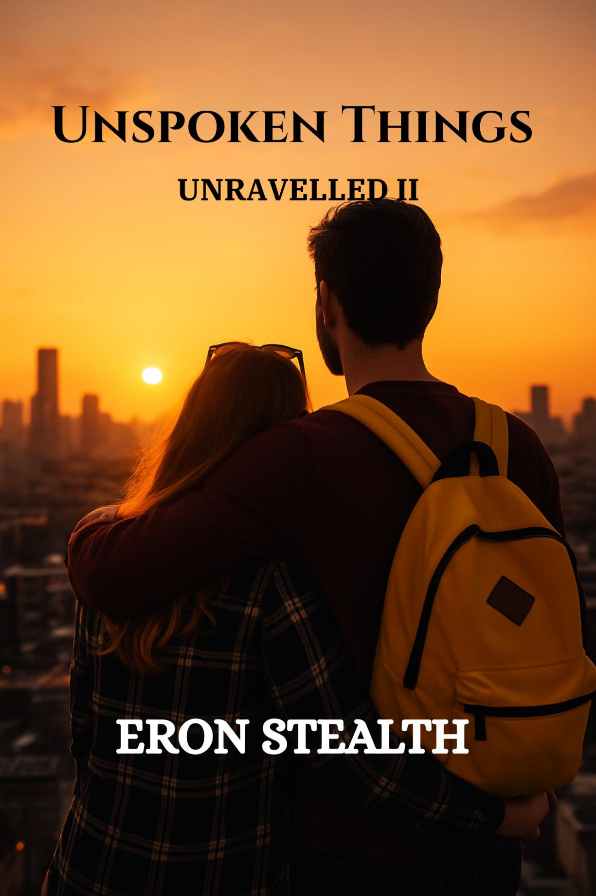

← Back to Unravelled
Unspoken Things
Unravelled II

They have begun to find a rhythm. Ordinary days, small detours, a night spent off the map in a seaside town. Then something arrives that neither of them is prepared for, and the space between what is said and what is carried grows wider. The dead leave questions, and questions can become threats. Sometimes the only way through is to survive long enough to understand what happened. Absence has a way of clarifying what was never spoken. So does return.
Excerpt
The key scraped against the lock, and for a second Alex thought his hands were just too unsteady from the night’s driving. But when the door nudged inward with the faintest push, his stomach dropped. Then he stopped cold. His door was open. Just barely. A sliver of darkness peeked from the gap.
He was sure he’d locked it before leaving. Slowly, carefully, he pressed his fingers against the wood and nudged it open farther.
Tossed.
That was the only way to describe it. The couch cushions were strewn across the floor, drawers yanked open with their contents scattered. The place wasn’t just messy, it felt wrong. The air carried a faint tang of cigarette smoke. His desk lamp leaned sideways as though it had been backhanded. Papers fluttered under the draft of the half-cracked window.
He froze. It wasn’t just a break-in. Someone had been in here—long enough to touch the things he barely touched some days.
Then it struck him: something was off. Nothing seemed missing.
His laptop? Still on the desk.
His wallet? Still in the kitchen tray.
Even the spare cash he kept in the drawer? Untouched.
Whoever did this wasn’t here to steal. They were searching for something.
And the worst part? He had no idea what.
Buy the Series
Return to Unravelled →